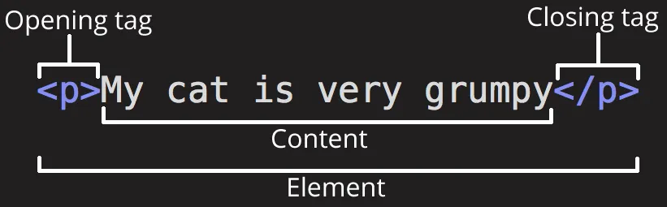

El Lenguaje de Marcado de Hipertexto (HTML) es el código que se utiliza para estructurar y desplegar una
página web y sus contenidos. Por ejemplo, sus contenidos podrían ser párrafos, una lista con viñetas, o
imágenes y tablas de datos. Como lo sugiere el título, este artículo te dará una comprensión básica de
HTML y cúal es su función.
HTML no es un lenguaje de programación; es un lenguaje de marcado que define la estructura de tu
contenido. HTML consiste en una serie de elementos que usarás para encerrar diferentes partes del
contenido para que se vean o comporten de una determinada manera. Las etiquetas de encierre pueden hacer
de una palabra o una imagen un hipervínculo a otro sitio, se pueden cambiar palabras a cursiva, agrandar
o achicar la letra, etc. Por ejemplo, toma la siguiente línea de contenido:
First make sure your current directory is your .ssh folder.

La etiqueta de apertura: consiste en el nombre del elemento (en este caso, p), encerrado por paréntesis angulares (< >) de apertura y cierre. Establece dónde comienza o empieza a tener efecto el elemento —en este caso, dónde es el comienzo del párrafo—.
La etiqueta de cierre: es igual que la etiqueta de apertura, excepto que incluye una barra de cierre (/) antes del nombre de la etiqueta. Establece dónde termina el elemento —en este caso dónde termina el párrafo—.
El contenido: este es el contenido del elemento, que en este caso es sólo texto.
El elemento: la etiqueta de apertura, más la etiqueta de cierre, más el contenido equivale al elemento.
The -C option is a comment to help identify the key.
The -f option specifies the file name for the key pair.
You can choose how to name the key pair. I followed the recommendation here and used github-{GitHub
username.
You’ll now have a public and private key in your ~/.ssh/ folder.
Add the SSH keys to your SSH-agent
Your keys are now created but won’t be used until they are added to the agent. Let’s add them.
Los atributos contienen información adicional acerca del elemento, la cual no quieres que aparezca en el contenido real del elemento. Aquí class es el nombre del atributo y editor-note el valor del atributo. En este caso, el atributo class permite darle al elemento un nombre identificativo, que se puede utilizar luego para apuntarle al elemento información de estilo y demás cosas.
You only need the --apple-use-keychain option on a mac. More details on adding keys to the SSH agent
here.
Import all the public keys on the corresponding GitHub accounts
You can quickly copy each key to the clipboard with the commands below. After each copy,
Visit here while logged in to the corresponding GitHub account;
Click the ‘New SSH key’ button and paste the public key from clipboard.
Puedes también colocar elementos dentro de otros elementos —esto se llama anidamiento—. Si, por ejemplo, quieres resaltar una palabra del texto (en el ejemplo la palabra «muy»), podemos encerrarla en un elemento , que significa que dicha palabra se debe enfatizar: